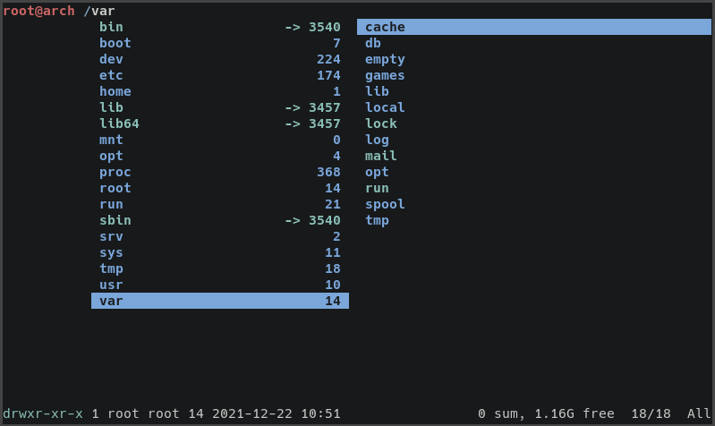

ranger
ranger Logo by zaeph and hut is licensed under the Creative Commons Attribution-Share Alike 4.0 International license.
ranger is a CLI file manager.
Configuration file
- set show_hidden true Makes ranger show hidden files, too.
Source code
ranger is in development. You can view its source code here.